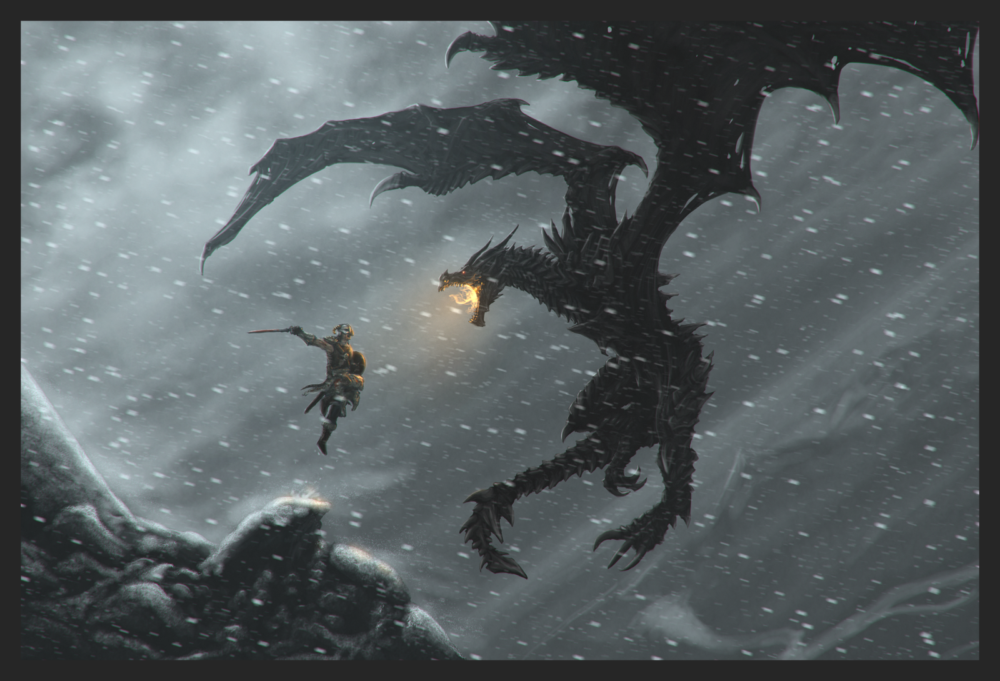

Quests sao tarefas que o personagem pode executar em The Elder Scrolls V : Skyrim. Varias pessoas podem iniciar quests, permitindo recompensas a serem adquiridas por completa-las. Recompensas essas que variam de dinheiro para itens ou ate mesmo outras coisas.
A principal missão de The Elder Scrolls V: Skyrim envolve a investigação e resolução da Crise Dragão, como predito pelo "Pergaminho Antigo". Duas facções devem ser unidas a fim de avançar a missão principal, os Blades e o Colegio de Winterhold. "Paarthurnax" é completamente opcional e pode ser concluído após a missão principal. "Temporada interminável" opera em condições especiais; Completá-la ira pausar a questline Guerra Civil, ao completar a questline Guerra civil faz com que esta missão não apareça,uma vez que não é mais necessário.

Quests Secundarias
Quests Secundárias envolvem varios tipos de missões, desde curtas e simples, até arcos complexos que encadeiam diversas outras missões e aconteci9mentos no jogo. As principais missões secundarias seriam a "Guerra Civil", onde se deve escolher um lado na guerra civil que está ocorrendo no país, e as "Missões Daedricas", onde você deve realizar tarefas para os Daedras(Deuses) em troca de alguns itens encantados.